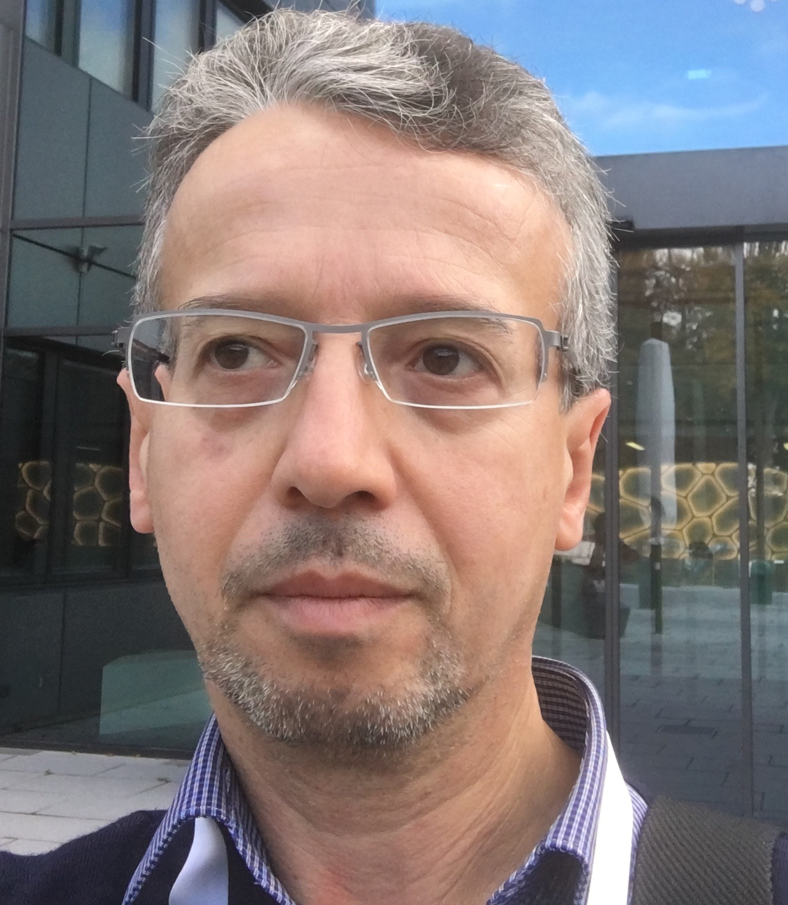

Raffaele Calogero |
|

Raffaele Calogero is the PI of the Bioinformatics and Genomics unit (B&Gu) at Molecular Biotechnology Center in Torino. He became Associate Professor of Molecular Biology in 1992 at University of Naples (Italy) and, in 1998, he moved in University of Turin, where is setup B&Gu lab. Between 2000 and 2010 he was deeply involved in transcriptomics data analysis and mining (microarray technology). In 2010 he moved his interest on Next Generation Sequencing (NGS) data analysis (RNA-seq, miRNA-seq, Exome-seq, single-cell-seq). His main research focus is biomarker discovery in oncology and complex genetic diseases. Between 2002-2010 he organized, in collaboration with Affymetrix, training courses for biologists on microarray data analysis. Since 2010, he is involved in bioinformatics training at EMBL (Heidelberg). He runs courses on NGS data analysis in collaboration with Illumina in Italy, and in collaboration with DUKE-NUS in Singapore.
|